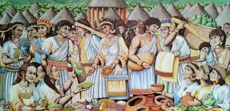

Antes de la llegada de los españoles, tanto Soacha como Sibaté hacían parte del territorio del pueblo muisca, una de las civilizaciones indígenas más avanzadas del altiplano cundiboyacense. Vivían en armonía con la naturaleza, cultivaban papa, maíz y quinua, y rendían culto al sol (Sué) y al agua, elementos sagrados en su cosmovisión.
Con la colonización, Soacha fue fundada oficialmente el 15 de enero de 1600, mientras que Sibaté se formó más tarde, alrededor del siglo XIX, cuando se separó administrativamente de Soacha. Los españoles construyeron iglesias y haciendas que hoy siguen siendo parte del paisaje urbano y rural.

Una de las joyas históricas compartidas por ambos municipios es el Salto del Tequendama, una cascada de más de 150 metros de altura que fue sagrada para los muiscas. Se creía que en sus aguas se refugiaban los espíritus del mundo antiguo. Más tarde, en la época republicana, se convirtió en uno de los lugares turísticos más famosos de Colombia.

Con el paso de los años, Soacha pasó de ser un pueblo agrícola a una ciudad en crecimiento acelerado, pegada a Bogotá. Hoy supera el millón de habitantes, mezclando historia, cultura y desarrollo urbano. Sibaté, por su parte, ha mantenido un ritmo más tranquilo, conservando su ambiente campesino y natural.
Significado del nombre Soacha significa literalmente “varón del sol” según el idioma de los muiscas. Esta curiosa traducción no es casual: la leyenda muisca cuenta historias de Bochica trayendo luz tras una gran inundación. Sin duda, Soacha conserva un aura mística con su nombre ancestral. Actualmente el gentilicio oficial es soachuno o suachuno, y los locales lo recuerdan en su himno y escudo.